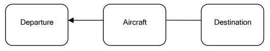

O que é Domain Drive Design
O desenvolvimento de software é mais frequentemente aplicado para automatizar processos que existem no mundo real ou fornecer soluções para problemas reais de negócios; Os processos de negócios sendo automatizados ou problemas do mundo real que o software é o domínio do software. Devemos entender desde o início que o software é originado e profundamente relacionado a este domínio.
Software é feito de código. Podemos ficar tentados a gastar muito tempo com o código e ver o software como simples objetos e métodos.
Considere a fabricação de automóveis como uma metáfora. Os trabalhadores envolvidos na fabricação de automóveis podem se especializar na produção de peças do carro, mas, ao fazê-lo, muitas vezes têm uma visão limitada de todo o processo de fabricação do carro. Eles começam a ver o carro como uma enorme coleção de peças que precisam se encaixar, mas um carro é muito mais do que isso. Um bom carro começa com uma visão. Começa com especificações cuidadosamente escritas. E continua com o design. Muitos e muitos desenhos. Meses, talvez anos de tempo gasto no design, mudando e refinando até atingir a perfeição, até que reflita a visão original. O design de processamento não está todo no papel. Muito disso inclui fazer modelos do carro e testá-los sob certas condições para ver se funcionam. O design é modificado com base nos resultados dos testes. O carro é enviado para produção eventualmente, e as peças são criadas e montadas juntas.
O desenvolvimento de software é semelhante, não podemos simplesmente sentar e digitar código. Podemos fazer isso, e funciona bem para casos triviais, mas não podemos criar softwares complexos como esse.
Para criar um bom software, você precisa saber do que se trata esse software. Você não pode criar um sistema de software bancário a menos que tenha uma boa compreensão do que é o setor bancário, é preciso entender o domínio do setor bancário.
É possível criar um software bancário complexo sem um bom conhecimento de domínio? Sem chance. Nunca. Quem conhece sobre bancos? O arquiteto de software? Não. Ele apenas usa o banco para manter seu dinheiro seguro e disponível quando precisar. O analista de software? Não mesmo. Ele sabe analisar um determinado tópico, quando recebe todos os ingredientes necessários. O desenvolvedor? Esqueça. Quem então? Os bancarios, é claro. O sistema bancário é muito bem compreendido pelas pessoas de dentro, por seus especialistas. Eles conhecem todos os detalhes, todas as capturas, todos os possíveis problemas, todas as regras. É aqui que devemos sempre começar: o domínio.
Quando começamos um projeto de software, devemos nos concentrar no domínio em que ele está operando. Todo o propósito do software é aprimorar um domínio específico. Para poder fazer isso, o software tem que se encaixar harmoniosamente com o domínio para o qual foi criado. Caso contrário, ele introduzirá tensão no domínio, provocando mau funcionamento, danos e até mesmo causará caos.
Como podemos fazer o software se encaixar harmoniosamente com o domínio? A melhor maneira de fazer isso é tornar o software um reflexo do domínio. O software precisa incorporar os conceitos e elementos centrais do domínio e realizar com precisão as relações entre eles. O software tem que modelar o domínio.
Alguém sem conhecimento bancário deve ser capaz de aprender muito apenas lendo o código em um modelo de domínio, isso é essencial. O software que não tem suas raízes profundamente plantadas no domínio não reagirá bem a mudanças ao longo do tempo.
Então começamos com o domínio. Então o que? Um domínio é algo deste mundo. Não pode simplesmente ser tomado e despejado sobre o teclado no computador para se tornar código. Precisamos criar uma abstração do domínio. Aprendemos muito sobre um domínio enquanto conversamos com os especialistas do domínio. Mas esse conhecimento bruto não será facilmente transformado em construções de software, a menos que construamos uma abstração dele, um projeto em nossas mentes. No início, o projeto está sempre incompleto. Mas com o tempo, enquanto trabalhamos nele, nós o melhoramos e fica cada vez mais claro para nós. O que é essa abstração? É um modelo, um modelo do domínio. De acordo com Eric Evans, um modelo de domínio não é um diagrama específico; é a ideia que o diagrama pretende transmitir. Não é apenas o conhecimento na cabeça de um especialista de domínio; é uma abstração rigorosamente organizada e seletiva desse conhecimento. Um diagrama pode representar e comunicar um modelo, assim como um código cuidadosamente escrito, assim como uma frase em inglês.
O modelo é nossa representação interna do domínio alvo, e é muito necessário durante todo o processo de design e desenvolvimento. Durante o processo de design, lembramos e fazemos muitas referências ao modelo. O mundo ao nosso redor é demais para nossas cabeças lidarem. Mesmo um domínio específico pode ser mais do que uma mente humana pode lidar de uma só vez. Precisamos organizar a informação, sistematizá-la, dividi-la em pedaços menores, agrupar esses pedaços em módulos lógicos, pegar um de cada vez e lidar com isso. Precisamos até deixar algumas partes do domínio de fora. Um domínio contém informações demais para incluir tudo no modelo. E muito disso nem precisa ser considerado. Este é um desafio por si só. O que guardar e o que jogar fora? Faz parte do design, do processo de criação do software. O software bancário certamente acompanhará o endereço do cliente, mas não deve se preocupar com a cor dos olhos do cliente. Esse é um caso óbvio, mas outros exemplos podem não ser tão óbvios.
Um modelo é uma parte essencial do design de software. Precisamos dele para poder lidar com a complexidade. Todo o nosso processo de pensamento sobre o domínio é sintetizado neste modelo. Isso é bom, mas tem que sair da nossa cabeça. Não é muito útil se permanecer lá, não é? Precisamos comunicar esse modelo com especialistas de domínio, com colegas designers e com desenvolvedores. O modelo é a essência do software, mas precisamos criar formas de expressá-lo, de comunicá-lo aos outros. Não estamos sozinhos nesse processo, por isso precisamos compartilhar conhecimento e informações, e precisamos fazê-lo bem, de forma precisa, completa e sem ambiguidade. Existem diferentes maneiras de fazer isso. Uma é gráfica: diagramas, casos de uso, desenhos, figuras, etc. Outra é a escrita. Escrevemos nossa visão sobre o domínio. Outra é a linguagem. Podemos e devemos criar uma linguagem para comunicar questões específicas sobre o domínio. Vamos detalhar tudo isso mais tarde, mas o ponto principal é que precisamos comunicar o modelo.
Quando temos um modelo expresso, podemos começar a fazer o design de código. Isso é diferente do design de software. O design de software é como criar a arquitetura de uma casa, é sobre o quadro geral. Por outro lado, o design de código está trabalhando nos detalhes, como a localização de uma pintura em uma determinada parede. O design de código também é muito importante, mas não tão fundamental quanto o design de software. Um erro de design de código geralmente é mais facilmente corrigido, enquanto erros de design de software são muito mais caros para reparar. Uma coisa é mover uma pintura mais para a esquerda e outra completamente diferente é derrubar um lado da casa para fazer diferente. No entanto, o produto final não será bom sem um bom design de código. Aqui os padrões de design de código são úteis e devem ser aplicados quando necessário. Boas técnicas de codificação ajudam a criar um código limpo e de fácil manutenção.
Existem diferentes abordagens para o projeto de software. Um deles é o método de projeto em cascata. Este método envolve uma série de etapas. Os especialistas de negócios colocam um conjunto de requisitos que são comunicados aos analistas de negócios. Os analistas criam um modelo com base nesses requisitos e passam os resultados para os desenvolvedores, que começam a codificar com base no que receberam. É um fluxo de conhecimento de mão única. Embora essa tenha sido uma abordagem tradicional no design de software e tenha sido usada com certo nível de sucesso ao longo dos anos, ela tem suas falhas e limites. O principal problema é que não há feedback dos analistas para os especialistas de negócios ou dos desenvolvedores para os analistas.
Outra abordagem são as metodologias ágeis, como Extreme Programming (XP). Essas metodologias são um movimento coletivo contra a abordagem em cascata, resultante das dificuldades de tentar antecipar todos os requisitos, principalmente à luz da mudança de requisitos. É muito difícil criar um modelo completo que cubra todos os aspectos de um domínio antecipadamente. É preciso muito pensamento e, muitas vezes, você simplesmente não consegue ver todos os problemas envolvidos desde o início, nem pode prever alguns dos efeitos colaterais negativos ou erros de seu projeto. Outro problema que o Agil tenta resolver é a chamada “paralisia da análise”, com os membros da equipe com tanto medo de tomar decisões de design que não fazem nenhum progresso. Embora os defensores do Agil reconheçam a importância da decisão de design, eles resistem ao design inicial. Em vez disso, eles empregam uma grande flexibilidade de implementação e, por meio de desenvolvimento iterativo com participação contínua das partes interessadas de negócios e muita refatoração, a equipe de desenvolvimento aprende mais sobre o domínio do cliente e pode produzir melhor software que atenda às necessidades do cliente.
Os métodos ágeis têm seus próprios problemas e limitações; eles defendem a simplicidade, mas todos têm sua própria visão do que isso significa. Além disso, a refatoração contínua feita por desenvolvedores sem princípios sólidos de design produzirá um código difícil de entender ou alterar. E enquanto a abordagem em cascata pode levar ao excesso de engenharia, o medo do excesso de engenharia pode levar a outro medo: o medo de fazer um projeto profundo e cuidadosamente pensado.
Este livro apresenta os princípios do design orientado ao domínio, que quando aplicado pode aumentar muito a capacidade de qualquer processo de desenvolvimento de modelar e implementar os problemas complexos no domínio de maneira sustentável. Domain-Driven-Design combina design e prática de desenvolvimento e mostra como design e desenvolvimento podem trabalhar juntos para criar uma solução melhor. Um bom design acelerará o desenvolvimento, enquanto o feedback proveniente do processo de desenvolvimento aprimorará o design.
Construindo o Conhecimento do Domínio
Vamos considerar o exemplo de um projeto de sistema de controle de voo de avião e como o conhecimento de domínio pode ser construído.
Milhares de aviões estão no ar em um determinado momento em todo o planeta. Eles estão voando seus próprios caminhos em direção aos seus destinos, e é muito importante garantir que eles não colidam no ar. Não tentaremos elaborar todo o sistema de controle de tráfego, mas um subconjunto menor que é um sistema de monitoramento de voo. O projeto proposto é um sistema de monitoramento que rastreia cada voo sobre uma determinada área, determina se o voo segue sua suposta rota ou não, e se existe a possibilidade de colisão.
Por onde começamos a partir de uma perspectiva de desenvolvimento de software? Na seção anterior dissemos que deveríamos começar entendendo o domínio, que neste caso é o monitoramento do tráfego aéreo. Os controladores de tráfego aéreo são os especialistas deste domínio. Mas os controladores não são projetistas de sistemas ou especialistas em software. Você não pode esperar que eles lhe entreguem uma descrição completa do domínio do problema.
Os controladores de tráfego aéreo possuem vasto conhecimento sobre seu domínio, mas para poder construir um modelo é preciso extrair informações essenciais e generalizá-las. Quando você começar a conversar com eles, ouvirá muito sobre aeronaves decolando e pousando, aeronaves no ar e o perigo de colisão, aviões esperando antes de serem autorizados a pousar, etc. Para encontrar ordem nessa quantidade aparentemente caótica de informações, precisamos começar em algum lugar.
O controlador e você concordam que cada aeronave possui um aeródromo de partida e de destino. Então temos uma aeronave, uma partida e um destino, como mostra a figura abaixo.
